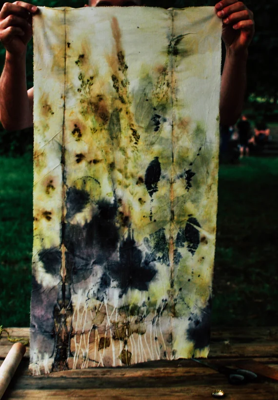
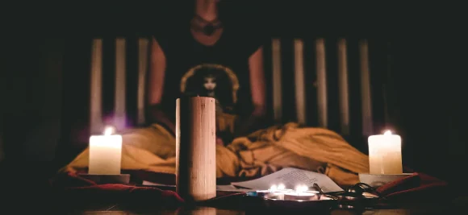
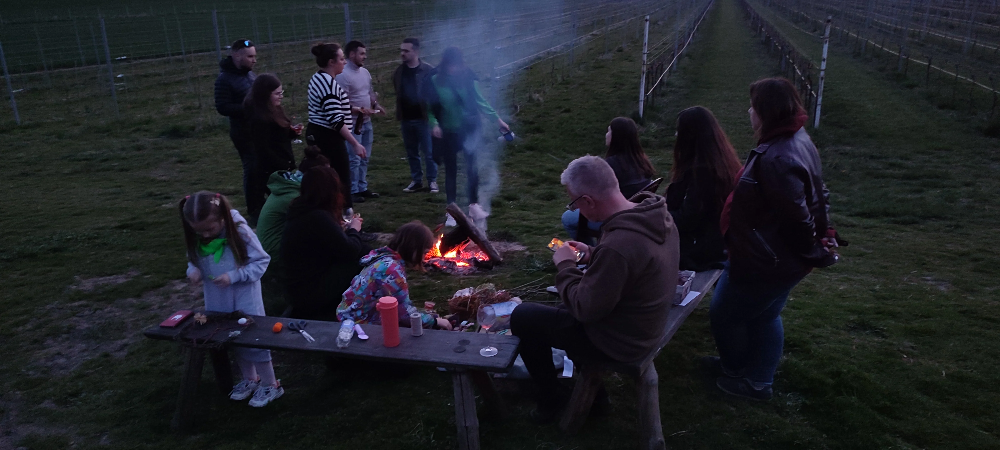
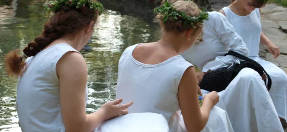
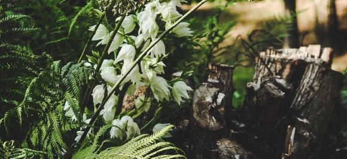
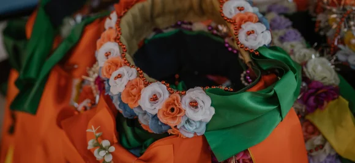
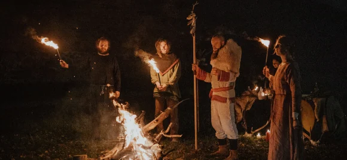

Rok kołem się toczy, a jego fragmenty oddzielone są od siebie przesileniami i równonocami, porami roku. Dni te od tysięcy lat świętowane są w różnych kulturach i religiach. Nasze eventy opieramy na autorskim kalendarzu, wiążącym święta słowiańskie, chrześcijańskie i celtyckie.
Jeśli poszukujesz dla siebie nowych form świętowania wspólnotowych rytuałów, uczczenia czegoś, współtworzenia magicznych wydarzeń wywodzących się z polskiej i europejskiego folkloru to u nas na pewno znajdziesz coś dla siebie.

Święto Świec to pierwsze święto Koła Roku. Przypada w okolicach lutowego sabatu większego, który w tradycji polskiej obchodzony jest jako Matki Boskiej Gromnicznej (Gromnica). Święto to istnieje bardzo długo, w różnych religiach. Celtowie obchodzili je na cześć bogini Brigid, w starożytnym Rzymie poprzedzało Luperkalia. Początkiem roku konieczne było oczyszczenie przez ogień i wodę. Stąd zwyczaj święcenia przyniesionych do kościoła świec (gromnic). Gromnice miały moc chronienia przed piorunami, oświetlały drogę, domostwa ale także ostatnie chwile umierających. Gromnice chroniły też przed wilkami, co opisuje jedna z najpiękniejszych legend polskich: o Matce Boskiej Gromnicznej i wilku. Jedno jest pewne – tradycja ta jest dużo wcześniejsza niż religie nowożytne, a świece były od zawsze jednymi z najważniejszych przedmiotów obrzędowych w życiu człowieka. Święto Świec to święto ognia i jego magicznych mocy – oczyszczenia, ukojenia, rozświetlania mroku. Podczas eventu doświadczycie wszelkich sensualnych i dobroczynnych właściwości świec, przygotujecie je samodzielnie, uzyskacie wiedzę o aromaterapii, apiterapii, światłoterapii, medytacji. Będzie też okazja do zaopatrzenia się w wysokiej jakości produkty związane z wyżej wymienionymi dziedzinami.

Noc Walpurgi to event związany z majowym sabatem - Wiosennymi Dziadami. Celtowie obchodzili je jako Beltaine, Germanie jako Noc Walpurgii. Pełny rozkwit wiosny to czas drzew, kwiatów, nowalijek, młodych chwastów. To czas siewu, sadzenia, zbierania młodych liści i pędów. Kram organizujemy podczas weekendu majowego, kiedy to możecie przy okazji zwiedzić Byczynę i okolice, wziąć udział w warsztatach rzemieślniczych, grze miejskiej. Kram Kwietny wokół tych tematów będzie krążył, a tematyka i wydarzenia współtowarzyszące zaskoczą Was wszystkich..

Noc Świętojańska – Noc Kupały to najważniejsze święto naszego Koła Roku. Sabat Letniego Przesilenia to środek lata, pełnia rozkwitu natury, czas miłości. Podczas Nocy czcimy wszystkie żywioły. Ogień – rozpaleniem ognisk, wodę – rytuałem wianków, ziemię – tańcem i powietrze – śpiewem. Cały event odbywa się w klimatycznym miejscu w plenerze i okraszony jest muzyką, dobrym jedzeniem i odpowiednim wystrojem. W ramach pakietu dodatkowego będziecie mieć dostęp do Wiedźmiego Szałasu, gdzie czekają na Was: magiczny wyszynk, stylizowane stroje, możliwość aktywnego udziału w przygotowaniu rytuałów, kącinę wróżb, dostęp do balii i sauny ogrodowej, przekąski i słodkości przygotowane przez naszego Mistrza kuchni, ziołowe specyfiki Wiedźmy Dżoany, nocleg w namiotach Saxon.

Kram zielny organizujemy zawsze wraz ze świętem Matki Boskiej Zielnej. To piękne, chrześcijańskie święto łączy się z pogańskim kultem Wielkiej Bogini, słowiańskiej Mokoszy – uosobienia natury i jej obfitości. Obchodami Zielnej chcemy podziękować Ziemi za to że nas nosi, karmi i daje schronienie. Event ten łączy funkcje handlowe, rozrywkowe i edukacyjne. Towarzyszy mu muzyka na żywo, gotowanie live, możliwość spróbowania najrozmaitszych produktów lokalnych i regionalnych. Tematem przewodnim są zioła i kwiaty jadalne. Zioła pojawiają się na Kramie nie tylko w formie kulinarnej, ale także w formie kadzideł, kosmetyków, leków, ozdób, biżuterii czy produktów kolekcjonerskich.

Tradycyjne Dożynki chcemy świętować z Wami podczas naszego eventu, łączonego z Europejskimi Dniami Dziedzictwa (EDD). Jest to święto dziękczynne, etniczne, ludowe, obchodzone w okolicach równonocy jesiennej. Nazwa Żniwniok pochodzi z naszych terenów czyli Śląska Opolskiego, ale ma też inne nazwy jak: Święto Plonów, Harvest Home, Mabon, Alban Elfed i jest bardzo starym świętem ludów Europy. Podczas Żniwnioka chcemy podzielić się zbiorami lata, rzemiosłem, trunkami aby zapewnić sobie przychylność na nowy rok. Zabawa Żniwniokowa ma charakter magiczny – zapewnia urodzaj na przyszłe lata. Niewątpliwą atrakcją eventu jest kolacja degustacyjna wraz z opowieścią o lokalnych trunkach – miodach, winach, piwach czy innych wyjątkowych alkoholach wytwarzanych na terenie Opolszczyzny. Chcemy tym sposobem promować regionalne i lokalne produkty certyfikowane przez Europejską Sieć Regionalnego Dziedzictwa Kulinarnego.

Dziadowskie Party organizujemy od 2018 r. Jest to event, który przeniesie Was do świata słowiańskiej fantastyki. Nieodzownym elementem imprezy są przebrania, które będzie można wcześniej u nas wypożyczyć. Tematem przewodnim imprezy jest żywność obrzędowa. Mak, grzyby, zioła, wino, miód i chleb to produkty żywnościowe, które miały zapewniać łączność z zaświatami. Stąd ich obecność podczas kolacji wigilijnej czy wielkanocnej. Dziady zaś to wyjątkowy czas, rozpoczynający „ciemną stronę roku”. Wigilia Święta zmarłych to zbiór obrzędów i rytuałów łączących ze światem zmarłych, a przebrania są zabiegiem magicznym, związanym z „odwracaniem uwagi”. Wszak „jeśli się ich boisz – przystąp do nich” mówi stare powiedzenie. Podczas eventu posłuchacie muzyki na żywo, posmakujecie nietypowych przekąsek i drinków, weźmiecie udział w tajemniczej zabawie...a wszystko to w ekscytującej oprawie i klimatycznym miejscu. Dziadowskie organizowane jest przy ograniczonej ilości uczestników, wymaga więc wcześniejszej rezerwacji.